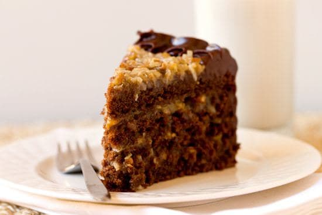
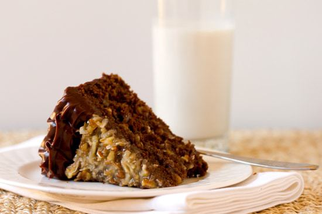
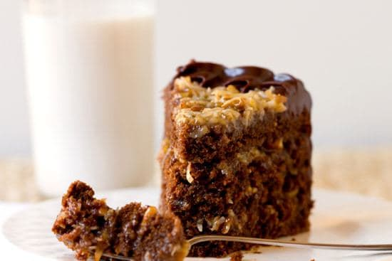

German Chocolate Cake
12/Feb

I have long associated German Chocolate Cake with Father's Day, although I'm not entirely sure why. I think I remember my mom making it for my dad once or twice growing up (although never on Father's Day, ironically) and the correlation must have stuck somewhere along the way. Although I don't have a distinct memory to tie the two together, German Chocolate Cake just seems like a “man's man” cake, doesn't it? So many chocolate layers with a sugary pecan-coconut filling in between and then iced in more chocolate… it's certainly not a cake for the faint of heart! With Father's Day coming up this Sunday, I'm sure this cake could make many men in your life happy!
Up until recently, I thought that this cake actually originated in Germany, hence the name. Turns out, it's as American as the Big Mac. Who knew?! Way back in 1852, Sam German developed a brand of dark chocolate for Baker's Chocolate Company and the resulting product, Baker's German's Sweet Chocolate, was named in honor of him. Then, in the late 1950's, the original recipe for “German's Chocolate Cake”, which used the baking chocolate, was submitted by a homemaker to a local newspaper. It became insanely popular, so much so, that the company that owned Baker's Chocolate noticed and distributed the recipe to other newspapers across the country. Reportedly, sales of the chocolate increased 73% , and the cake became famous. Here's hoping that homemaker from Dallas who came up with the recipe got a little piece of the action!
This recipe was actually my second go at German Chocolate Cake recently, and I'm pretty confident it will be my last. I first turned to my usual trusted source for classic recipes when I set about making the cake, but ended up being surprisingly disappointed. The cake layers were wispy thin and the chocolate flavor was severely lacking. I started my search over and when I came across this recipe I thought it looked extremely promising. It was described as a “big, tall” cake with four layers brushed with a rum syrup, lots of filling and iced with a fantastic chocolate ganache. This cake delivered and then some.
You can't taste the rum in the syrup, but it accents the chocolate flavor and keeps the cake nice and moist. The filling is studded with toasted pecans and toasted coconut; the toasting takes mere minutes but adds so much in terms of flavor and texture. Finally, the icing isn't overpowering, but a perfect complement and finishing touch to the cake - you don't want to skip it!
Are you making anything special for Father's Day on Sunday?
